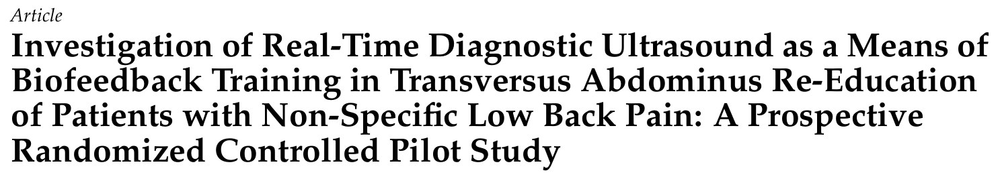
🔖原文标题（Healthcare 2023;11:1396，开放获取）
📚 文献信息
▪ Taxiarchopoulos N, Drakonaki E, Gianniotis M, Matzaroglou C, Tsepis E, Billis E. Investigation of Real-Time Diagnostic Ultrasound as a Means of Biofeedback Training in Transversus Abdominus Re-Education of Patients with Non-Specific Low Back Pain: A Prospective Randomized Controlled Pilot Study. Healthcare. 2023;11(10):1396.
▪ 作者来自希腊帕特雷大学物理治疗系和克里特大学医学院
▪ 随机对照预试验（pilot RCT）；DOI：10.3390/healthcare11101396
教慢性腰痛患者“收腹横肌”，大概是很多治疗师每天都在做、又最没把握的事。腹横肌在最深层，手摸不到，我们按在髂前上棘内侧感觉到的，其实多半是腹内斜肌。患者也常常一脸茫然：到底收对了没有？
于是有人提出：干脆用超声，让患者自己看着屏幕上的腹横肌变厚，学得应该更快、更准。这篇希腊的随机对照预试验就想验证这件事——同样一套运动控制训练，加上超声反馈，会不会比传统的手摸加口头提示效果更好？
先说结论：两组都明显好转，但超声组并没有更好。不过这篇真正值得收藏的，是它完整公开的训练方案、运动控制测试和腹横肌分级方法。
• 对象：18～60 岁、病程超过 12 周、中重度功能障碍的慢性非特异性腰痛患者（可伴下肢放射症状）；排除脊柱手术史、系统性疾病和孕妇
• 27 人报名，23 人入组：超声组 12 人（8 女），对照组 11 人（9 女），没有人退出
• 两组做完全相同的运动控制训练：每周 2 次、共 7 周，每次 30～40 分钟，期间不接受其他腰痛治疗
• 对照组：治疗师双手放在髂前上棘内侧（触觉反馈），口头提示“把肚子往里收，脊柱和骨盆不要动”
• 超声组：探头横放在右侧腹壁、最下面肋骨与髂前上棘连线的中点，患者边练边看屏幕上的腹横肌，同时有治疗师指导
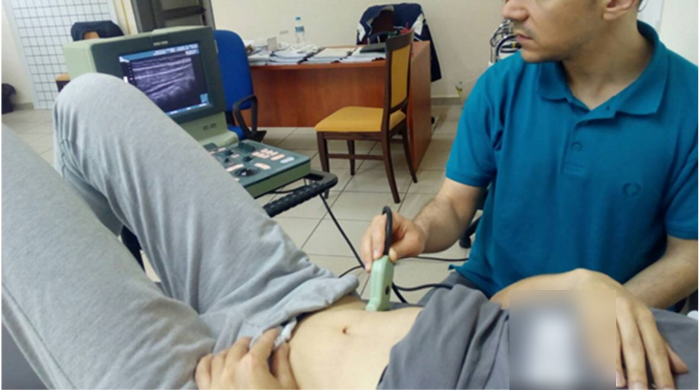
🔖原文图 1a 超声引导下训练腹横肌：患者体位与探头位置（衣服上的英文已模糊处理）
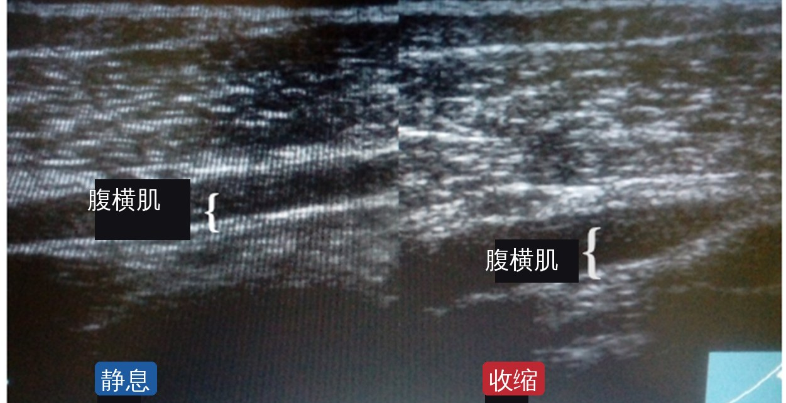
🔖原文图 1b 腹壁超声：左为静息，右为单独收缩腹横肌时，腹横肌明显变厚（已去除仪器英文界面，标注改为中文）
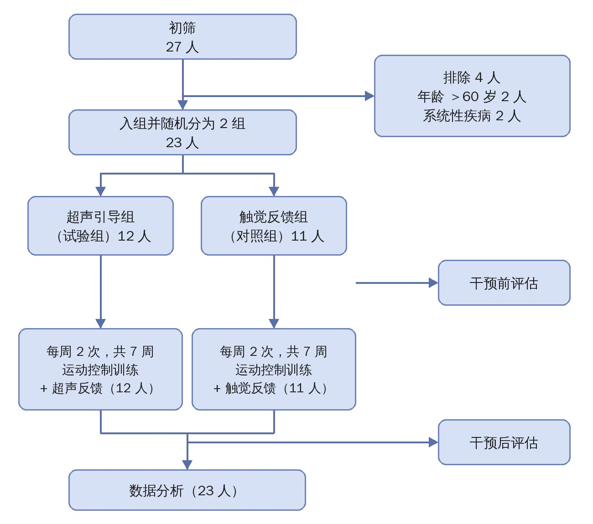
🔖原文图 3 受试者流程（中文重绘）
每次训练分三段：热身 6 个动作 → 主训练从 11 个动作里选 6 个 → 放松拉伸 4 个。热身和主训练都是 3 组 × 10 次。
进阶的规则很清楚：前 2 周只在屈膝仰卧位练，腰椎不负重；之后只要患者能正确完成当前最难的动作（10 次、每次保持 10 秒），就依次换到四点跪、坐位，最后到站立位。
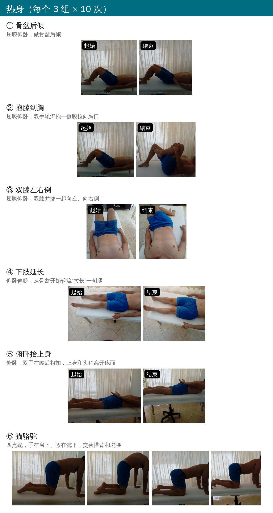
🔖附录 A 热身动作
热身以活动腰骨盆为主：骨盆后倾、抱膝、双膝左右倒、下肢延长、俯卧抬上身和猫骆驼，目的是先把要用的结构“唤醒”。
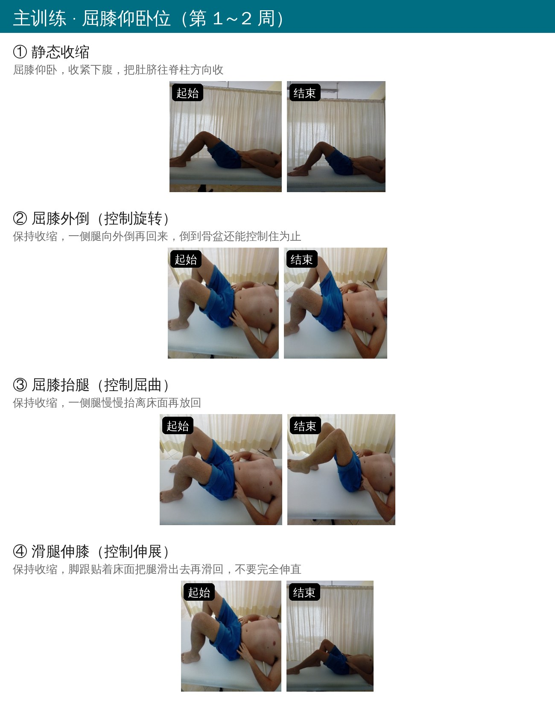
🔖附录 A 主训练：屈膝仰卧位
仰卧位的 4 个动作是整套方案的基础：先学会单独收缩（肚脐往脊柱收），再在保持收缩的同时让下肢做外倒、抬腿、滑腿，分别练对旋转、屈曲、伸展的控制。原文反复强调一句话：腿动到你还能控制住腹横肌和骨盆为止，控制不住就别再往下做。每次腿回到起始位时放松收缩。
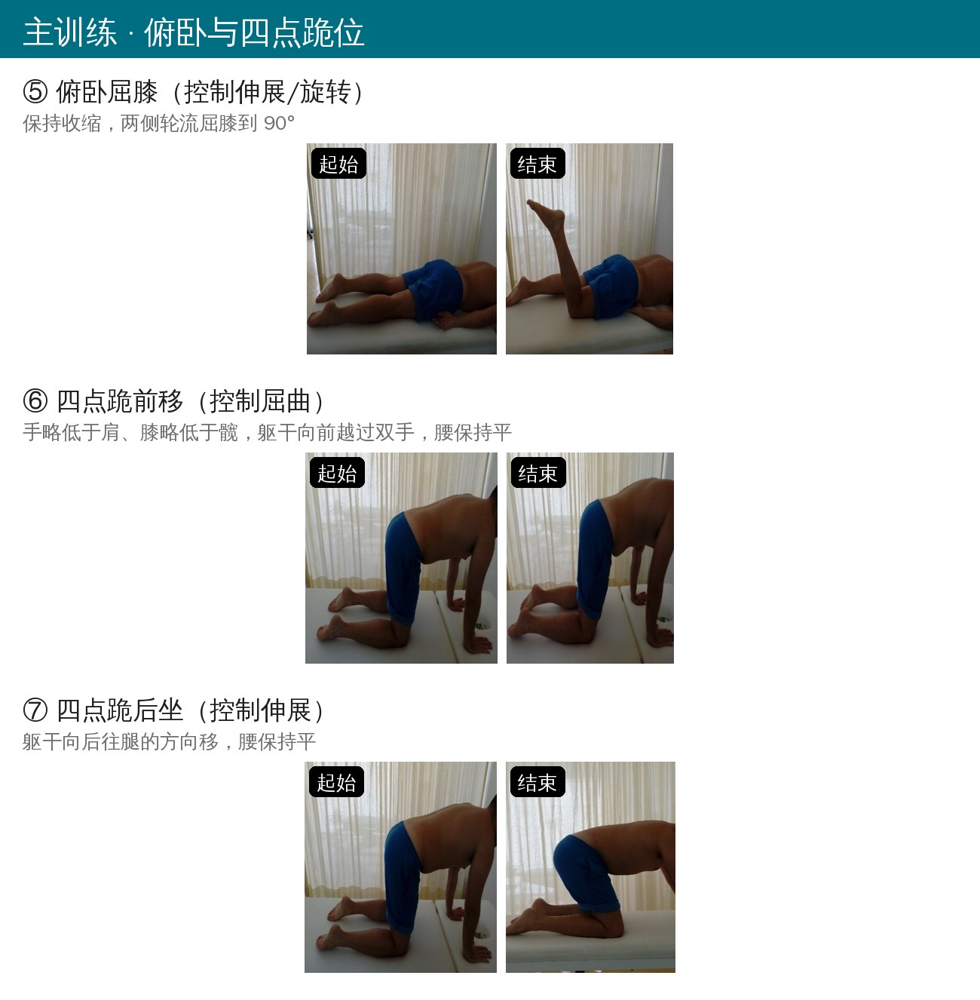
🔖附录 A 主训练：俯卧与四点跪位
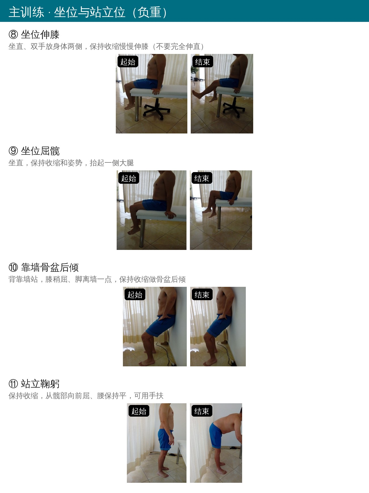
🔖附录 A 主训练：坐位与站立位
后面几个动作逐步加上体重负荷：俯卧屈膝、四点跪前移和后坐、坐位伸膝和屈髋，最后是靠墙骨盆后倾和站立鞠躬。核心要求始终是一样的——收着腹横肌，让动作发生在髋或膝，腰保持不动。
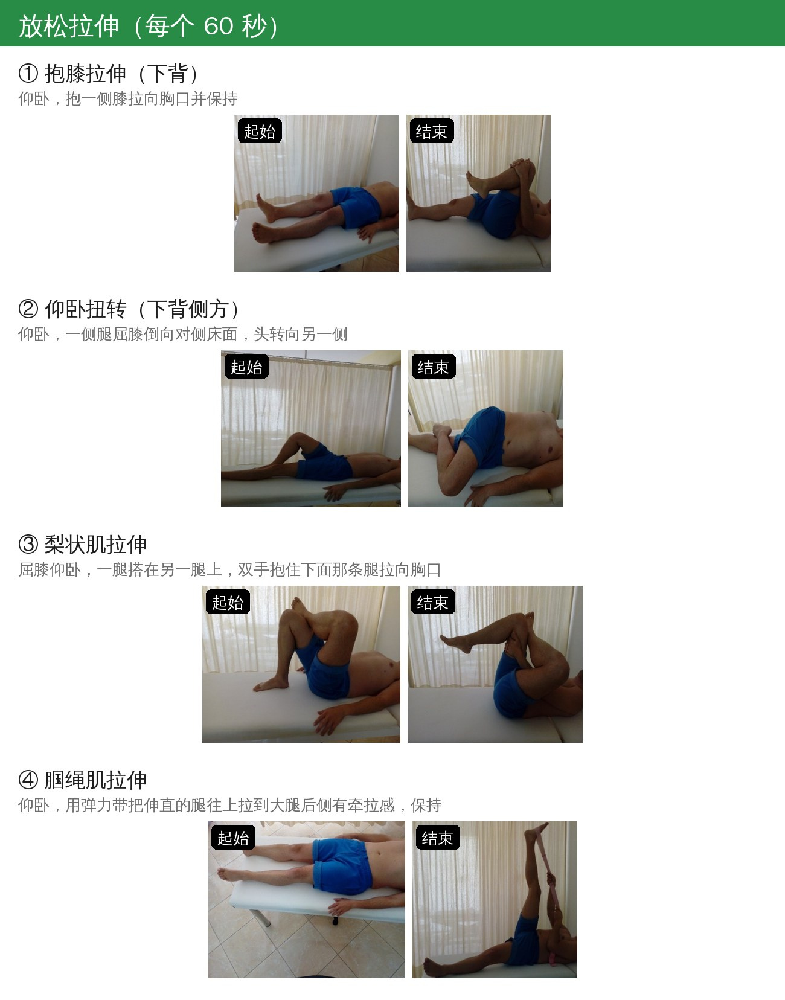
🔖附录 A 放松拉伸
拉伸包括抱膝、仰卧扭转、梨状肌和腘绳肌，每个保持 60 秒。原文正文写的是每个 2～4 次，附录又写 3 次，两处不一致。
为了让“收得好不好”有个客观标准，作者用压力生物反馈仪（Stabilizer）设计了一个 6 级评估，先在 10 个人身上做了预试验：
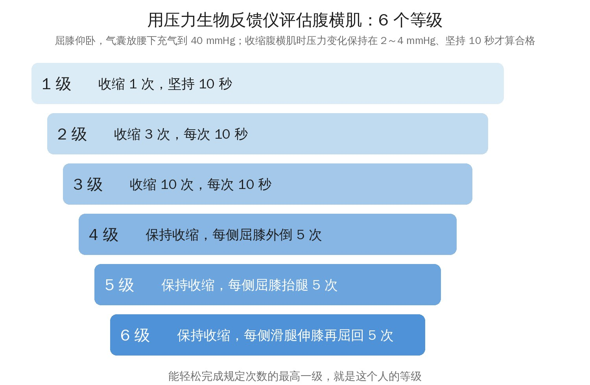
🔖腹横肌激活分级（按原文方法自绘）
每次收缩前先让全身、尤其是腹部放松，然后做次最大收缩；每一级之间休息 1 分钟。能轻松完成的最高一级就是这个人的等级。两位治疗师之间的信度不错（ICC = 0.86），也没有出现天花板效应。这个方法门诊里一台压力反馈仪就能做，用来判断什么时候可以进阶，挺实用。
评估运动控制用的是 7 个经典测试，每个只判“对”或“错”，门诊几分钟就能做完：
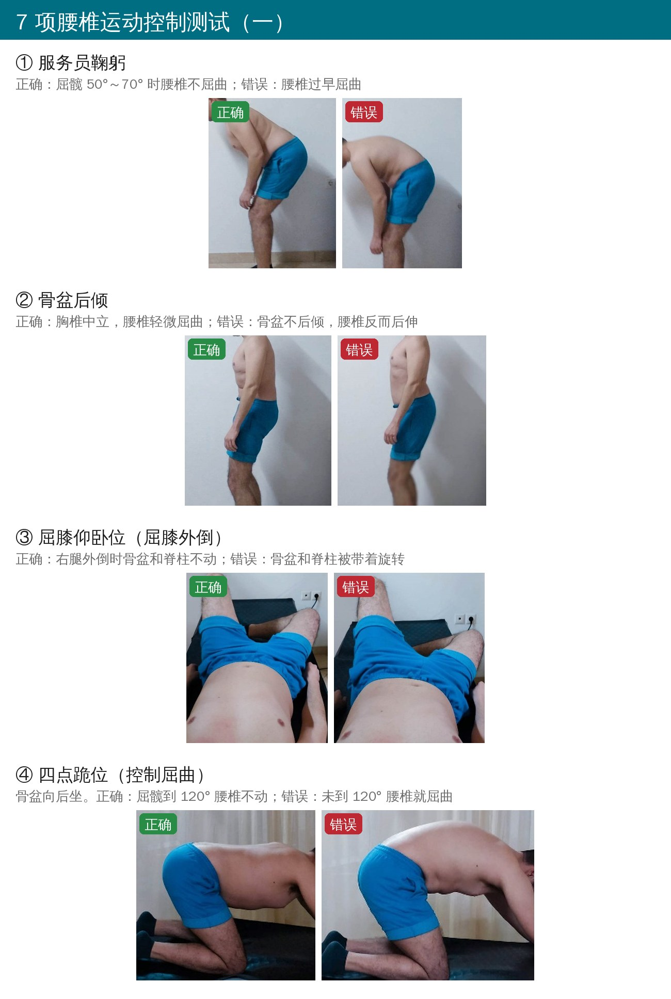
🔖原文图 2 运动控制测试（一）：左为正确，右为错误
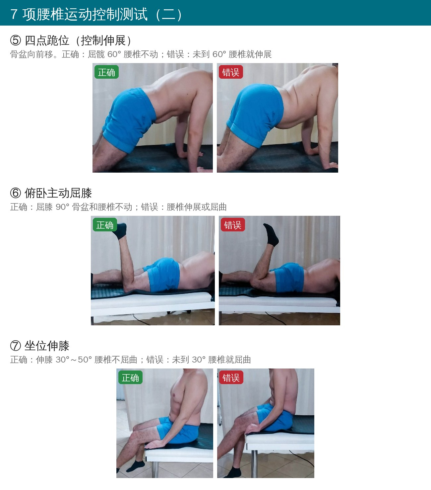
🔖原文图 2 运动控制测试（二）：左为正确，右为错误
表 1 两组基线情况
| 指标 | 超声组（n=12） | 对照组（n=11） | P 值 |
|---|---|---|---|
| 年龄（岁） | 47.67 ± 8.86 | 47.18 ± 14.56 | 0.923 |
| 身高（cm） | 168.83 ± 9.49 | 166.73 ± 8.95 | 0.590 |
| “体重（kg）” | 4.08 ± 3.15 | 3.73 ± 3.29 | 0.793 |
| “BMI（kg/m²）” | 2.75 ± 0.45 | 2.82 ± 0.75 | 0.915 |
| 男 / 女 | 4（33.3%）/ 8（66.7%） | 2（18.2%）/ 9（81.8%） | 0.408 |
🔖按原文表 1 整理。体重 4 kg、BMI 2.8 显然不对，原文应是放错了数据，见文末证据评价
表 2 全体受试者（n=23）干预前后
| 指标 | 干预前 | 干预后 | P 值 |
|---|---|---|---|
| 最严重时疼痛（NPRS） | 7.87 ± 1.74 | 2.61 ± 1.75 | ＜0.001 |
| 最轻时疼痛（NPRS） | 1.87 ± 1.60 | 0.13 ± 0.46 | ＜0.001 |
| 下肢痛（NPRS） | 4.04 ± 4.09 | 1.00 ± 1.54 | ＜0.001 |
| 功能障碍（RMDQ） | 9.91 ± 5.06 | 2.43 ± 2.43 | ＜0.001 |
| 焦虑（HADS） | 7.52 ± 3.85 | 7.04 ± 3.90 | 0.460 |
| 抑郁（HADS） | 5.39 ± 3.04 | 3.91 ± 3.15 | 0.023 |
| 腹横肌 2 级 / 3 级 / 4 级 / 5 级 / 6 级（人） | 1 / 12 / 9 / 0 / 1 | 0 / 7 / 8 / 5 / 3 | 0.017 |
| 服务员鞠躬（做对人数） | 12（52.2%） | 21（91.3%） | 0.004 |
| 骨盆后倾 | 15（65.2%） | 22（95.7%） | 0.010 |
| 屈膝外倒 | 3（13%） | 21（91.3%） | ＜0.001 |
| 四点跪（控制屈曲） | 9（39.1%） | 19（82.6%） | 0.003 |
| 四点跪（控制伸展） | 5（21.7%） | 17（73.9%） | ＜0.001 |
| 俯卧屈膝 | 15（65.2%） | 23（100%） | 0.002 |
| 坐位伸膝 | 18（78.3%） | 23（100%） | 0.019 |
🔖没有人处在 1 级
整体看，7 周下来变化很大：最严重时的疼痛从 7.9 降到 2.6，RMDQ 从 9.9 降到 2.4，屈膝外倒测试做对的人从 3 个变成 21 个。焦虑没有变化。
表 3 两组疼痛、功能、焦虑和抑郁
| 指标 | 超声组 前 | 超声组 后 | 对照组 前 | 对照组 后 | 组间 P 值 |
|---|---|---|---|---|---|
| 最严重时疼痛 | 7.33 ± 1.97 | 2.83 ± 1.70 | 8.45 ± 1.29 | 2.36 ± 1.86 | 0.593 |
| 最轻时疼痛 | 1.75 ± 1.71 | 0.08 ± 0.30 | 2 ± 1.55 | 0.18 ± 0.60 | 0.655 |
| 下肢痛 | 4.42 ± 4.70 | 1.33 ± 1.83 | 3.64 ± 3.50 | 0.64 ± 1.12 | 0.425 |
| RMDQ | 8.75 ± 4.52 | 2.83 ± 2.33 | 11.18 ± 5.53 | 2 ± 2.57 | 0.529 |
| 焦虑 | 6.58 ± 4.21 | 6.75 ± 3.96 | 8.55 ± 3.30 | 7.36 ± 4.01 | 0.329 |
| 抑郁 | 5.92 ± 2.97 | 4.08 ± 3.29 | 4.82 ± 3.16 | 3.73 ± 3.29 | 0.539 |
表 4 两组腹横肌等级和运动控制测试（人数及百分比）
| 指标 | 超声组 前 | 对照组 前 | 超声组 后 | 对照组 后 | P 值 |
|---|---|---|---|---|---|
| 腹横肌 2 级 | 0 | 1（9.1%） | 0 | 0 | 0.898 |
| 3 级 | 4（33.3%） | 8（72.7%） | 4（33.3%） | 3（27.3%） | |
| 4 级 | 8（66.7%） | 1（9.1%） | 4（33.3%） | 4（36.4%） | |
| 5 级 | 0 | 0 | 2（16.7%） | 3（27.3%） | |
| 6 级 | 0 | 1（9.1%） | 2（16.7%） | 1（9.1%） | |
| 服务员鞠躬 | 6（50.0%） | 6（54.5%） | 11（91.7%） | 10（90.9%） | 0.950 |
| 骨盆后倾 | 8（66.7%） | 7（63.6%） | 12（100%） | 10（90.9%） | 0.296 |
| 屈膝外倒 | 3（25.0%） | 0 | 12（100%） | 9（81.8%） | 0.131 |
| 四点跪（控制屈曲） | 5（41.7%） | 4（36.4%） | 11（91.7%） | 9（75.0%） | 0.242 |
| 四点跪（控制伸展） | 4（33.3%） | 1（9.1%） | 9（75.0%） | 9（75.0%） | 0.903 |
| 俯卧屈膝 | 9（75.0%） | 6（54.5%） | 12（100%） | 11（100%） | 1.000 |
| 坐位伸膝 | 9（75.0%） | 9（81.8%） | 12（100%） | 11（100%） | 1.000 |
🔖对照组 11 人，干预后“9（75.0%）”应为 81.8%，原文如此
两组比较，所有指标的组间差异都不显著。换句话说，看超声屏幕并没有让患者好得更多。
表 5 评估方法的测试者间信度（ICC）
| 评估 | ICC |
|---|---|
| 腹横肌分级 | 0.86 |
| 服务员鞠躬 | 0.75 |
| 骨盆后倾 | 0.65 |
| 屈膝外倒 | 0.39 |
| 四点跪（控制屈曲） | 0.55 |
| 四点跪（控制伸展） | 0.72 |
| 俯卧屈膝 | 0.66 |
| 坐位伸膝 | 0.31 |
注意屈膝外倒（0.39）和坐位伸膝（0.31）的信度偏低，用这两项判断进步时要谨慎。
作者给了两个解释，我觉得都说得通。第一，这批患者本来就会收：基线时 52% 在 3 级、39% 在 4 级，并不是完全找不到腹横肌的人，反馈的“增量”自然有限。第二，对照组也不是“没有反馈”，治疗师的手和口令本身就是一种有效的反馈。
以前在健康人身上的研究也类似：超声组学得更快、需要的尝试次数更少，但长期效果和其他组没差别。所以更合理的理解可能是：超声能帮人“更快上手”，但只要反馈到位，最终都能学会。真正需要超声的，也许是那些怎么都收不起来的患者。
• 这是预试验，23 人，没有做样本量计算，组间“没差异”很可能只是样本太小、检验效能不足，不能据此认为两种方法等效
• 没有随访，只看了训练刚结束时的结果；超声组在学习保持上的潜在优势（以往研究的发现）无法体现
• “单盲”没有说清楚盲的是谁；评估者是否知道分组也没交代
• 基线不完全平衡：超声组 4 级的有 8 人，对照组只有 1 人，对照组 3 级的多；作者却称基线无差异
• 数据有明显错误：表 1 体重 4.08 kg、BMI 2.75；摘要里年龄写 47.6 ± 2.55，表 1 却是 47.67 ± 8.86；表 4 对照组 9/11 写成 75%
• 前后表述矛盾：方法说训练 7 周，讨论里说 8 周；摘要说“每组所有指标都有显著改善”，但焦虑并没有改善；结论里“显著改善（p ＞ 0.05）”的符号也写反了
• 排除标准引用的文献之一是颈痛研究（Falla 2004），与腰痛不对应
• 运动控制测试只判对错，其中两项信度较低；腹横肌分级只用压力反馈，没有肌电或超声厚度的客观验证
没有超声也不用焦虑。这篇的结果至少说明：只要训练方案合理、治疗师的手法和口令到位，传统的触觉反馈也能把腹横肌教会。超声更适合用在那些反复教都找不到感觉的患者身上，或者用来缩短学习时间。
如果想直接用，可以这样搭：先用压力反馈仪的 6 级法评估腹横肌水平，再用 7 项运动控制测试找出控制最差的方向，然后从屈膝仰卧位的 4 个动作开始，能稳定完成 10 次 × 10 秒再往四点跪、坐位、站立位进阶。
欢迎关注骨科康复小黄公众号，获取更多物理治疗的专业知识！
📄参考文献：
Taxiarchopoulos N, Drakonaki E, Gianniotis M, Matzaroglou C, Tsepis E, Billis E. Investigation of Real-Time Diagnostic Ultrasound as a Means of Biofeedback Training in Transversus Abdominus Re-Education of Patients with Non-Specific Low Back Pain: A Prospective Randomized Controlled Pilot Study. Healthcare. 2023;11(10):1396. doi:10.3390/healthcare11101396
原文以 CC BY 4.0 协议开放获取。照片来自原文图 1、图 2 和附录 A（已去除英文），分级图和流程图为编者按原文绘制，仅用于学术交流。